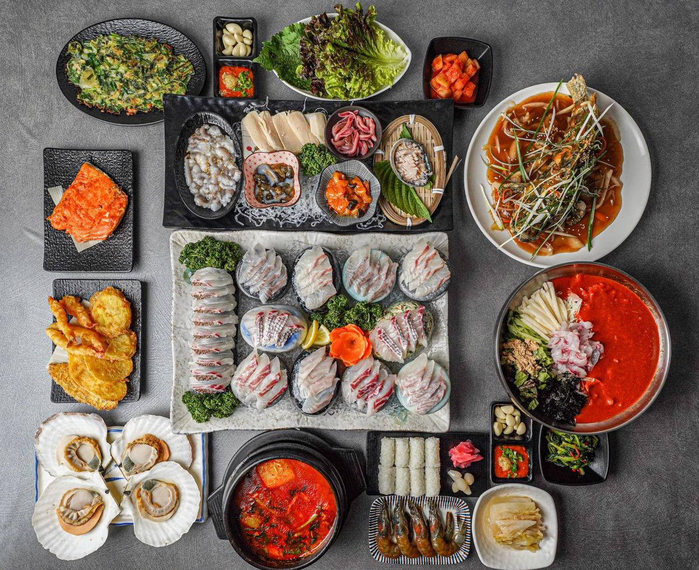

B코스
★ BEST
수림횟집 대표 코스 메뉴 · 고급모듬회와 다양한 해산물을 함께 즐길 수 있는 인기 메뉴입니다.
주문 전 안내
메뉴를 고르기 전 확인해 주세요.
날 음식을 드시지 못하는 분께는 생우럭 매운탕 / 지리탕, 우럭탕수, 돈까스 정식을 추천합니다.
생선회, 산낙지 등 일부 메뉴는 날것으로 제공됩니다. 산낙지는 접시 위에서 움직일 수 있으니 천천히 꼭꼭 씹어 드세요.
모든 코스 메뉴는 2인 이상 주문 가능합니다. 추가 해산물과 추가 메뉴는 단독 주문이 불가합니다.
사진은 대표 이미지이며 실제 구성은 계절, 재료 수급, 주문 인원에 따라 달라질 수 있습니다.
1인 1주문을 부탁드립니다.
수림 코스
2인 이상 주문 가능 · 모든 코스는 1인 가격입니다.
코스에 포함된 매운탕은 매콤합니다. 맵지 않은 지리탕으로 변경 가능합니다.
단품 사시미
모듬해물 · 맛보기 물회 · 매운탕 포함
포함된 매운탕은 매콤합니다. 맵지 않은 지리탕으로 변경 가능합니다.
회를 드신 후 매운탕을 꼭 요청해 주세요. 매운탕 조리 시간은 약 10분 정도 소요됩니다.
점심시간에 주문 가능합니다. 오후 2:30까지 주문 가능
포함된 매운탕은 매콤합니다. 맵지 않은 지리탕으로 변경 가능합니다.
주류 및 음료
주류는 종류별로 접었다 펼칠 수 있습니다.
주류 주문 시 신분증 확인이 필요할 수 있습니다.